Data flow model
Labview follows the data flow model. The program logic is a set of blocks with data flowing in between them. The data flows from blocks to blocks just like electricity flows in an electronic circuit.

List of topics we would be discussing in this course:
Labview is a Graphical Programming language. You have to use the mouse a lot more than the keyboard.
Warning: Possibility of physical damage. Exercise your fingers regularly because drawing programs is fun and we wont stop until our fingers cry for rest! :D
Labview follows the data flow model. The program logic is a set of blocks with data flowing in between them. The data flows from blocks to blocks just like electricity flows in an electronic circuit.
All programs we write would have a code (called diagram) and a GUI (graphical user interface) The two places we frequently work with in labview are:
In the front panel we add controls and indicators required by the program.
Example of a front panel:

Block diagram is the canvas in which we draw our code. We place different blocks called SubVIs and
connect these blocks using wires.

Standard SubVis are present in modules called palettes.
To view palettes, in Block diagram >> Right-click and different Palettes appear. Browse through it to find the block you need.

To connect wires, simply left click to snap on to an output node of a block and left click again on the input node of another block
If a wire is not connected properly, it appears as dashed lines. Use Ctrl+Z to undo or Ctrl+B to remove all broken wires
y = 3x - 5, y = 4x^2 + 7x + 6, get x value from user and output y
Hint: use Numeric paletteArrays are a collection of elements of the same datatype. Its like having a stack of money. The value of each note in the stack can vary, but they all belong to the same 'data-type' called money.
Arrays can be formed with strings, numbers, booleans. There are also arrays of special datatypes, which will be discussed later.
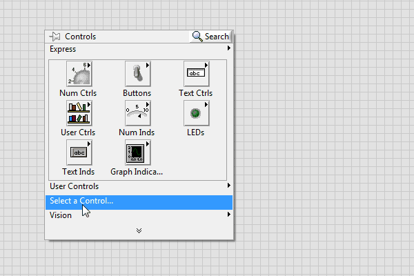
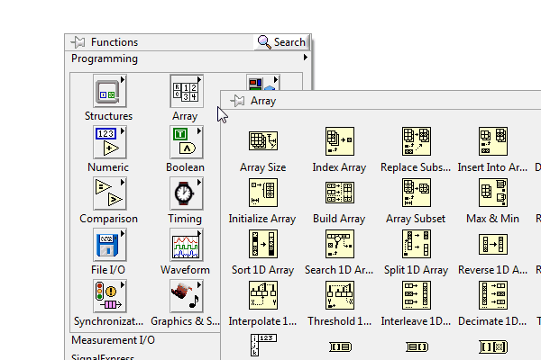
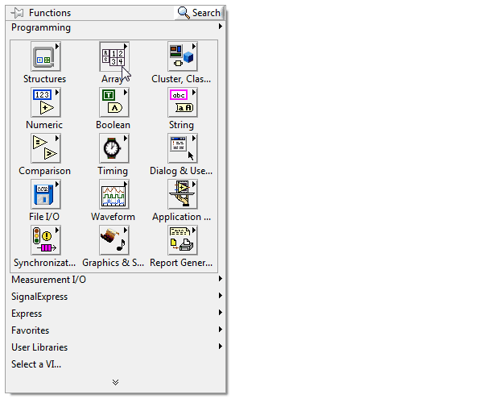
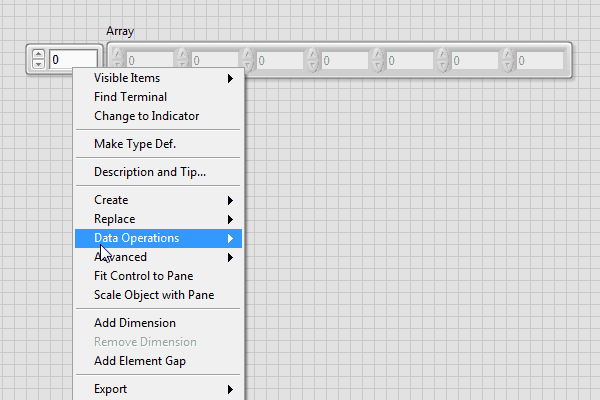
A for loop is a rectangular structure, the logic in which is repeated N times
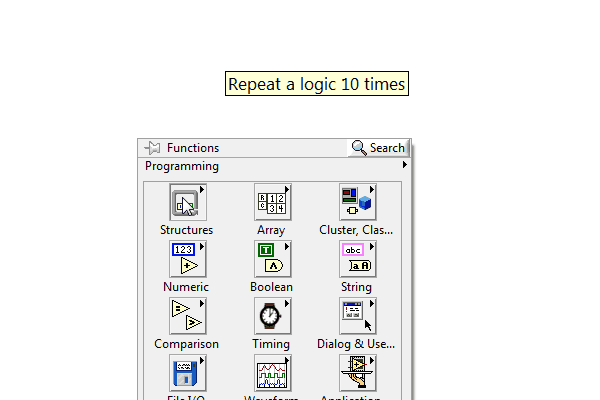
Auto-indexing. If you wire an array to a For Loop, you can read and process every element in that array by enabling auto-indexing
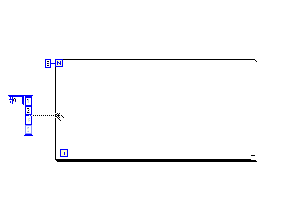
10,20,30,40,50 and 11,22,33,44,55, add them element-wise and return an arraysorting, split into two equal halfs, reverse each half, stitch them together and return a 1D arrayA string is a set of characters. strings are useful in processing human readable data using labview.
The most common characters used in string are:
a-z (lowercase alphabets), A-Z (uppercase alphabets), 0-9 (digits).,*&#$%^()!@"'{}[]/\~ (Special characters)\n, \t, \r (Escape codes)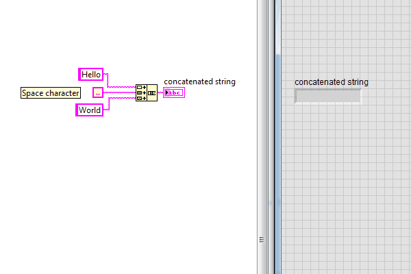
Strings are manipulated mainly using the following set of SubVis
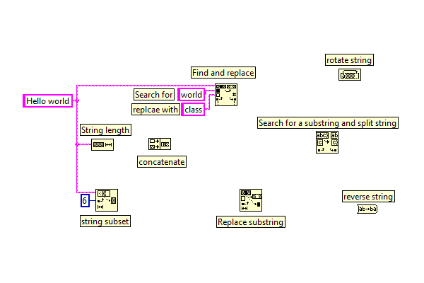
So your code generates some numbers, say your age, But you want to display it as a string to user. For this kind of problems we need the formatting SubVI.
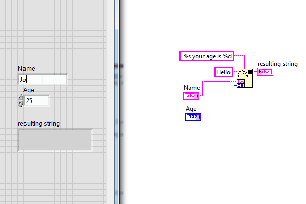
Another way to add age (number) to your string is by first converting it into a string. For this go to string palette>>String/Number conversion
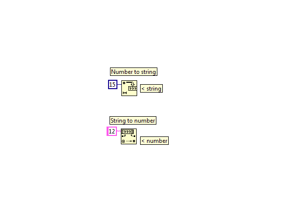
If in loops we want to store values of previous iteration, we have to use shift registers
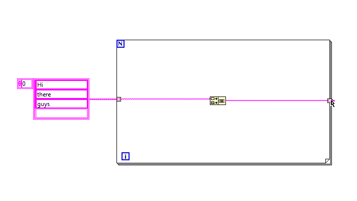
An Enum is a selectable list which gives out an integer
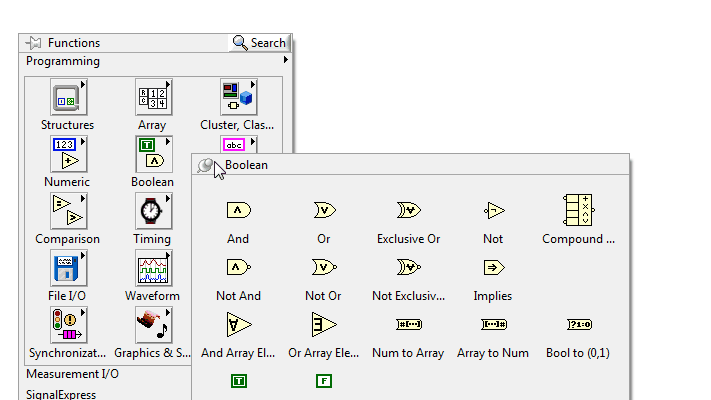
Booleans are used for Yes/No decisions. Is your age greater than 18? True/False. 1 > 0 = True. All True and False decisions fall under boolean.
Explore Boolean palette and find out how different blocks work.
We can compare variables of different datatypes and make decisions in our code.
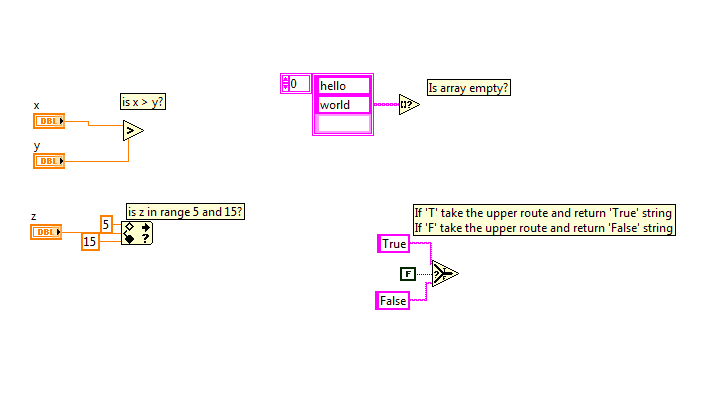
\n escape code inbetween1's or 0's. Convert any number from (0 to 255), convert them into a boolean array and display result with 8 LEDs.s beautiful!World i, using only one SubVi get the string World is beautiful!Winner else LoserWhile loop repeats execution of its contents unless some conditions are met. Make a condition (say check if iteration i>10) and wire it to condition terminal.
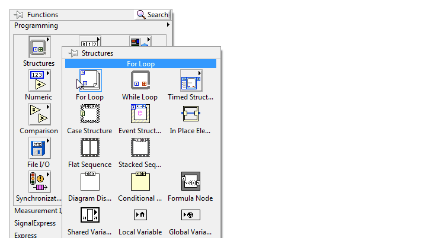
Used if you want to execute two different set of codes for different conditions. Like if it is raining outside, I will take an umbrella, If it is hot outside, I will use sunscreen, and If it is cold outside, I will use some cream.
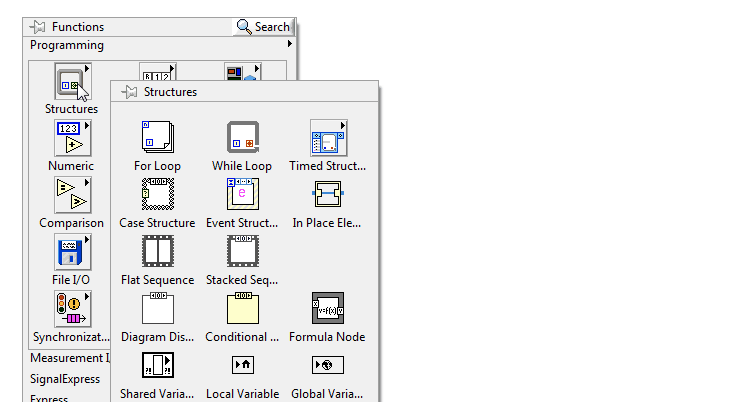
Sometimes loops have to be run slowly than it can, so that the processor is not under heavy load. Using wait inside loops helps in using resources more aptly as the solution needs.
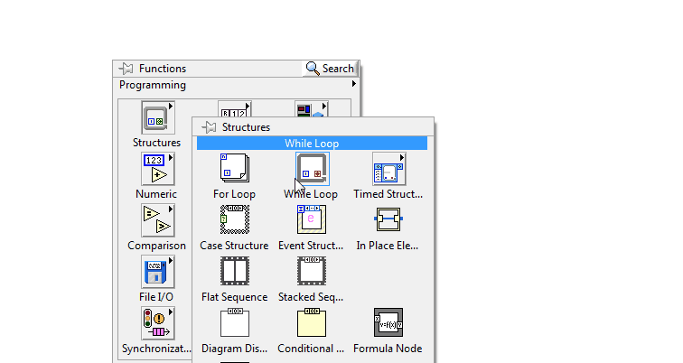
Timing palette has all that we need to bring time into the picture. If we want to add timestamps to our code, to show the user date and time.
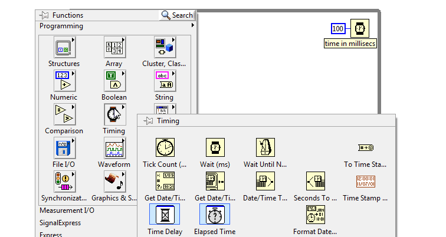
hot, warm, cold. Using a case structure and an infinite loop, display a custom message for each selection that the user makes anytime the program runs (dont forget to add a wait in the loop).
For example, if user selects hot, you can tell the user Welcome to chennai!.Read one temperature value per second. if temperature > 50 say to user 'Too hot!' and stop programn and gives him the possibility to choose between computing the sum and computing the product of 1,. . .,n. And returns the value of sum() or product() obtained.["Hello", "World", "in", "a", "frame"] gets printed as(Use while-loop):*********
* Hello *
* World *
* in *
* a *
* frame *
*********HH-MM-SS AM/PM.Using file palette we can read and write files.
A text file example: 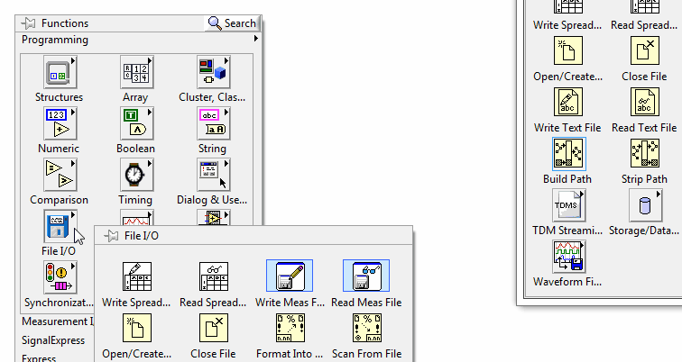
Some common file types that we use mostly are:
File path is the address to reach a file, to read or write or append or delete or any operations on it. 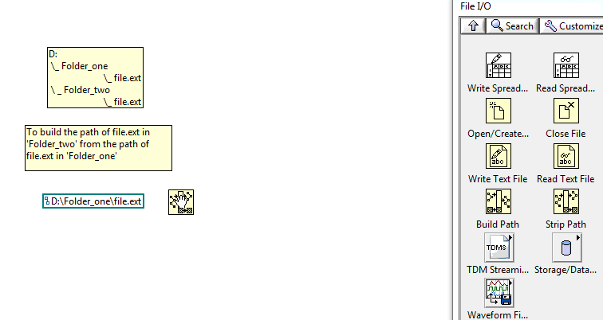
File constants can be used to get default directories, the VIs path, VIs directory.
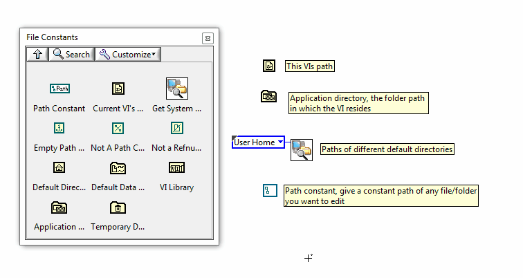
An event structure is used to capture events like user mouse click or value change in front-panel and more...
Hello world!value change of any of the controls, the latest of which was changed, its name should be displayed on a string indicator last_changedwrite this is clicked, a new file of the name
given should be created in the destination given, with the contents typed by the user.Access this form and submit your answers.
To create any software for a defined problem, this is one of the methods to work on it (The Software Method):
During the scenario stage of the software development method, you define what your problem is so that you can approach it with all the necessary factors identified. You can remove extraneous factors during this phase and focus on the core problem that you must solve. How you identify the problem initially can save you time while you design and implement a solution
In the implementation stage, you create code for your algorithm or flowchart. Because LabVIEW is a graphical programming language, the flowchart works much the same way.
Testing and verifying is an important part of the software development method. Make sure to test your implementation with data that is both logical and illogical for the solution you created. Testing logical data verifies that the inputs produce the expected result. By testing illogical data, you can test to see if the code has effective error handling
Maintenance is the ongoing process of resolving programming errors and adding parallel construction changes to the original solution for a problem.
This VI takes an input array that contains a mixture of positive and negative values and separates that array into two smaller arrays: one that contains the negative values and one that contains the positive values. The Initialize Array function and Build Array function are used and the For Loop sets its count by auto-indexing the input array.
When we want to group a set of variables/controls/indicators of different datatypes, we use a cluster. 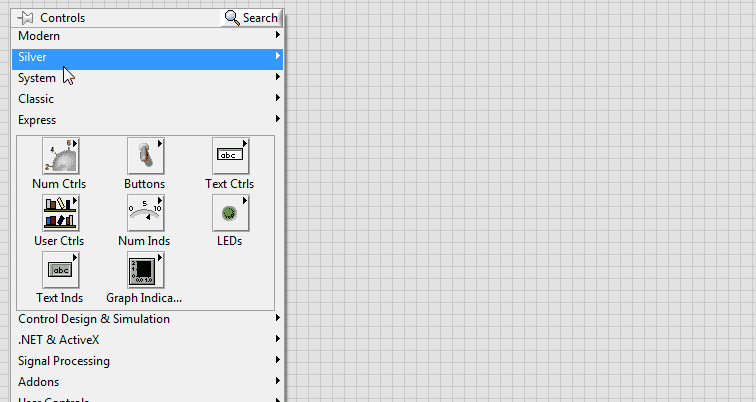
A cluster can be set as a control, indicator or a constant.

Cluster palette contains VIs that can be used to manipulate clusters. 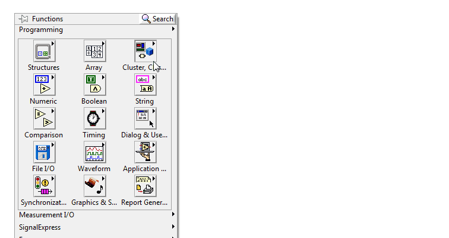